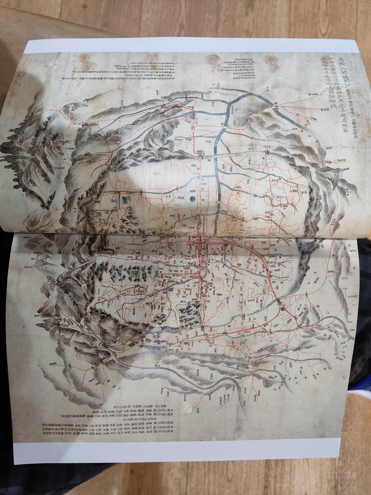
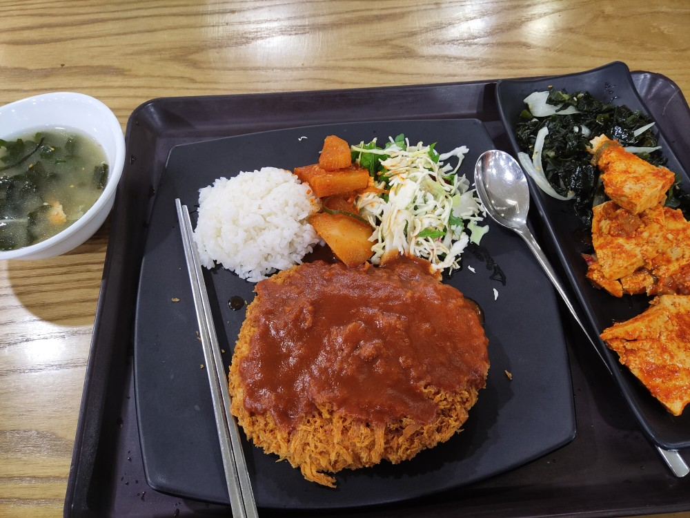
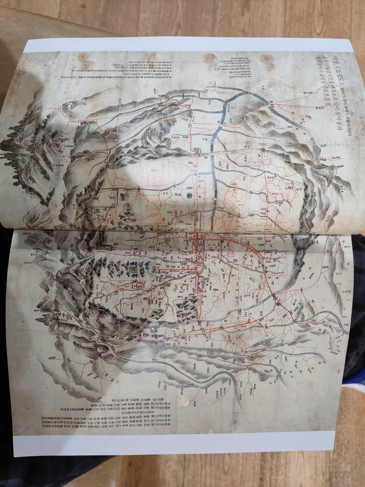
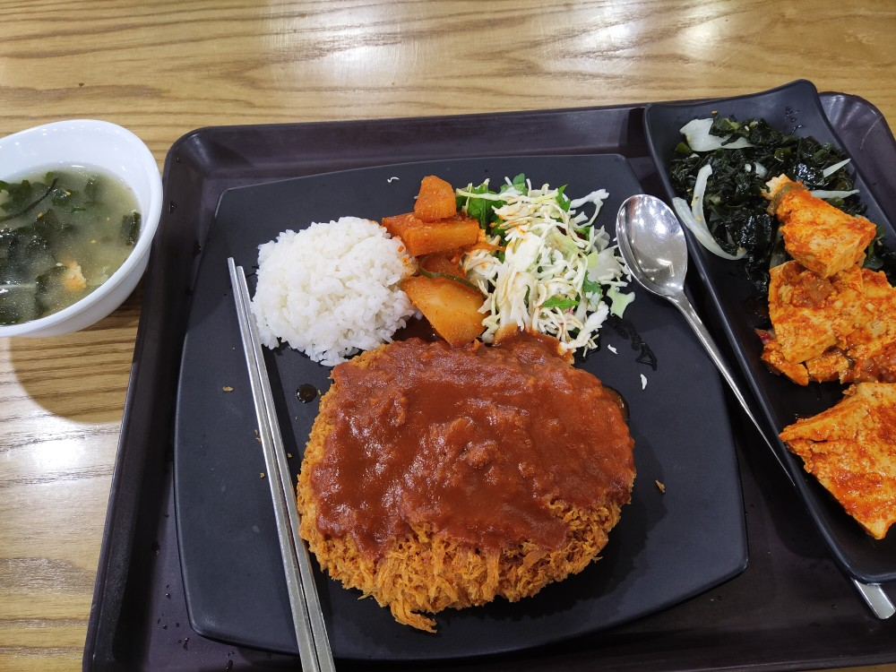
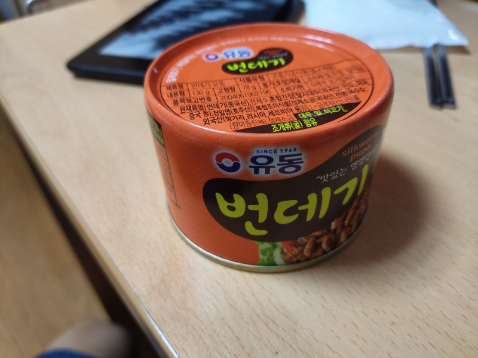

A quick trip to Gwanghua-mun area. You can do the fingerprint registration near the Global Service Center, instead of the Nambu office. Saved me so much time and allowed me to enjoy the Gwanghua-mun area

Nice, free exhibits at the Sejong musuem area
 



There's supringly few frozen vegetable packs in Korea, but the Nonghyup had some dried vegetables so I got those instead.
My most successfull weekend meals so far. Not sure what this Korean mix is, but it made for great pancakes. The bibimbap pack was less than I though, but was a perfect amount with the bacon and beansproouts.
Not my proudest work, but its good enough for a door.